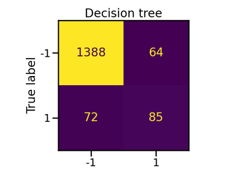

geometric_mean_score#
- imblearn.metrics.geometric_mean_score(y_true, y_pred, *, labels=None, pos_label=1, average='multiclass', sample_weight=None, correction=0.0)[source]#
Compute the geometric mean.
The geometric mean (G-mean) is the root of the product of class-wise sensitivity. This measure tries to maximize the accuracy on each of the classes while keeping these accuracies balanced. For binary classification G-mean is the squared root of the product of the sensitivity and specificity. For multi-class problems it is a higher root of the product of sensitivity for each class.
For compatibility with other imbalance performance measures, G-mean can be calculated for each class separately on a one-vs-rest basis when
average != 'multiclass'.The best value is 1 and the worst value is 0. Traditionally if at least one class is unrecognized by the classifier, G-mean resolves to zero. To alleviate this property, for highly multi-class the sensitivity of unrecognized classes can be “corrected” to be a user specified value (instead of zero). This option works only if
average == 'multiclass'.Read more in the User Guide.
- Parameters:
- y_truearray-like of shape (n_samples,)
Ground truth (correct) target values.
- y_predarray-like of shape (n_samples,)
Estimated targets as returned by a classifier.
- labelsarray-like, default=None
The set of labels to include when
average != 'binary', and their order ifaverage is None. Labels present in the data can be excluded, for example to calculate a multiclass average ignoring a majority negative class, while labels not present in the data will result in 0 components in a macro average.- pos_labelstr, int or None, default=1
The class to report if
average='binary'and the data is binary. Ifpos_label is Noneand in binary classification, this function returns the average geometric mean ifaverageis one of'weighted'. If the data are multiclass, this will be ignored; settinglabels=[pos_label]andaverage != 'binary'will report scores for that label only.- averagestr or None, default=’multiclass’
If
None, the scores for each class are returned. Otherwise, this determines the type of averaging performed on the data:'binary':Only report results for the class specified by
pos_label. This is applicable only if targets (y_{true,pred}) are binary.'micro':Calculate metrics globally by counting the total true positives, false negatives and false positives.
'macro':Calculate metrics for each label, and find their unweighted mean. This does not take label imbalance into account.
'multiclass':No average is taken.
'weighted':Calculate metrics for each label, and find their average, weighted by support (the number of true instances for each label). This alters ‘macro’ to account for label imbalance; it can result in an F-score that is not between precision and recall.
'samples':Calculate metrics for each instance, and find their average (only meaningful for multilabel classification where this differs from
accuracy_score).
- sample_weightarray-like of shape (n_samples,), default=None
Sample weights.
- correctionfloat, default=0.0
Substitutes sensitivity of unrecognized classes from zero to a given value.
- Returns:
- geometric_meanfloat
Returns the geometric mean.
Notes
See Metrics specific to imbalanced learning.
References
[1]Kubat, M. and Matwin, S. “Addressing the curse of imbalanced training sets: one-sided selection” ICML (1997)
[2]Barandela, R., Sánchez, J. S., Garcıa, V., & Rangel, E. “Strategies for learning in class imbalance problems”, Pattern Recognition, 36(3), (2003), pp 849-851.
Examples
>>> from imblearn.metrics import geometric_mean_score >>> y_true = [0, 1, 2, 0, 1, 2] >>> y_pred = [0, 2, 1, 0, 0, 1] >>> geometric_mean_score(y_true, y_pred) 0.0 >>> geometric_mean_score(y_true, y_pred, correction=0.001) 0.010... >>> geometric_mean_score(y_true, y_pred, average='macro') 0.471... >>> geometric_mean_score(y_true, y_pred, average='micro') 0.471... >>> geometric_mean_score(y_true, y_pred, average='weighted') 0.471... >>> geometric_mean_score(y_true, y_pred, average=None) array([0.866..., 0. , 0. ])
Examples using imblearn.metrics.geometric_mean_score#

Compare ensemble classifiers using resampling